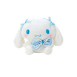
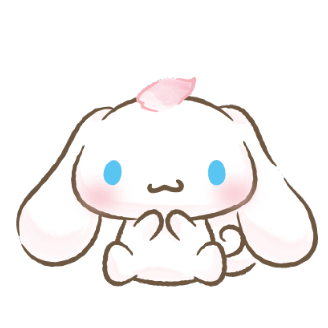

O que é a Cinnamon Store?
A Cinnamon Store é a loja ideal para os maiores fãs do querido Cinnamoroll! Juntamos varios produtos do nosso cachorrinho branco, desde pelucias á canecas, enfim, varios produtos com o rostinho que o fã do Cinna ama!
Sobre o Cinna...
Cinnamoroll é o mascote oficial do Cinnamon's Cafe. Ele é um pouco tímido, mas muito amigável, e as vezes ele tira uma soneca no colo dos clientes. Ele pode voar sobre o ar batendo suas enormes orelhinhas.
Voce pode saber mais sobre ele acessando o site oficial da Sanrio Brasil!